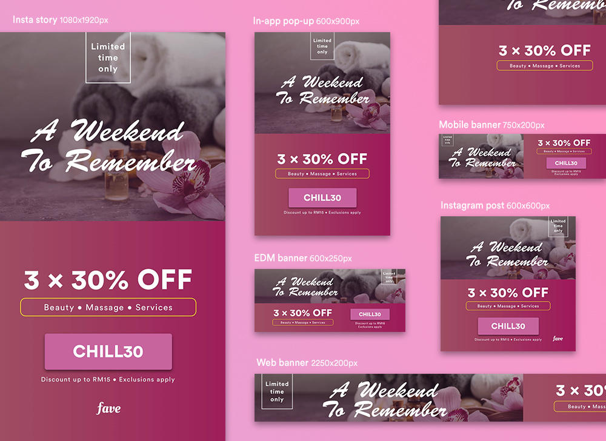
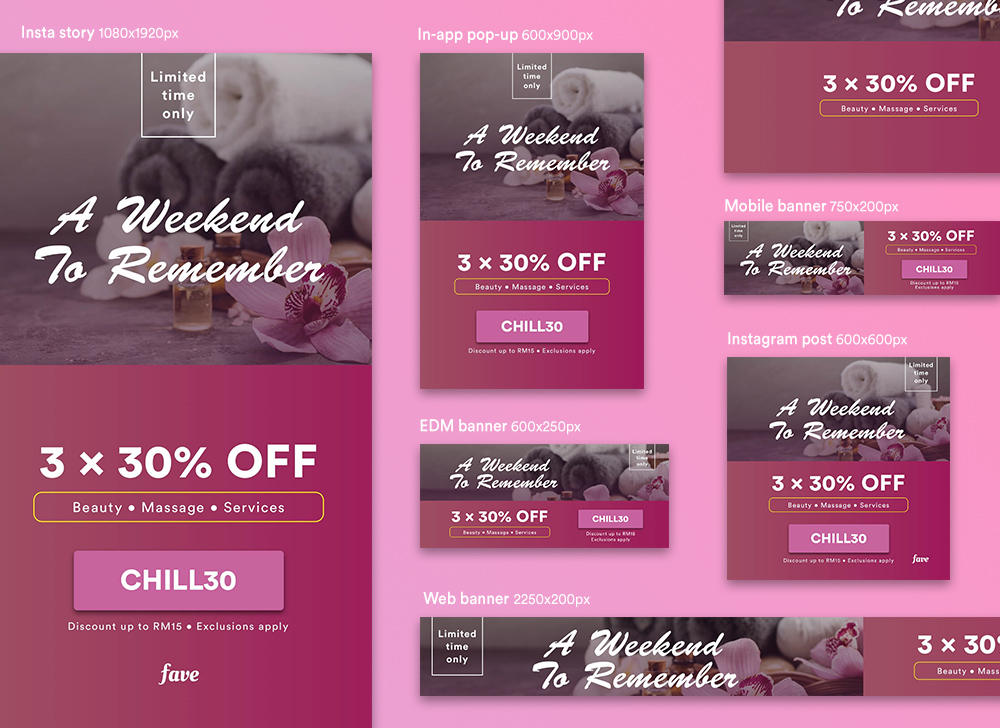

Fave Asia
Fave is one of the fastest growing startups in South East Asia. The Fave app, with over 100,000 active users, create connections between local businesses and consumers by providing great deals on food, beauty, fitness, and travel. In last year summer, I had an opportunity to become part of Fave as a Graphic Design Intern that I was responsible to design assets for consumer market, mainly focus on Singapore Malaysia customers.
digital campaigns
I started developing the logo with "joi", as part of the company's name, which can be also referred as 'joy'. As Patchjoi hopes their clothing can spark joy and great impression for their customers. This does not only bring the identity but also emphasizes the company's core value.
For each package I needed to design graphics for various platforms including, the Fave app, social media such as Facebook and Instagram, and email newsletters. The graphics did not necessary strictly follow Fave's brand guideline but usually followed by certain theme proposed by the marketing team. In addition, the design requests were usually made in a short notice, so I needed to make fast decisions and balance workload along with other tasks. Hence I learned to develop skills in fast decision making and ability to handle multiple rushed deadlines.
Below are some of the examples I have created for the campaigns:
 



 ◀ previous project: WOODWIDE
next project: YK PAO SCHOOL ▶
◀ previous project: WOODWIDE
next project: YK PAO SCHOOL ▶